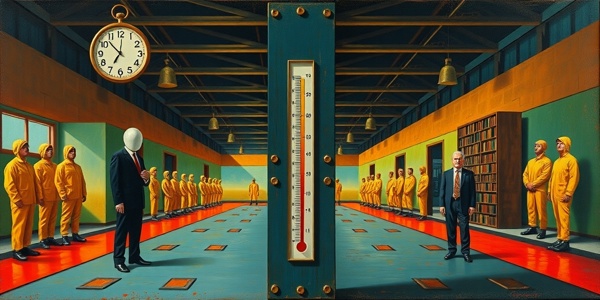

小汪老师的成长洞察 · 属于你的成长专栏
杀鱼姐在胖东来一个月拿八九千，离职后只能找到三四千的工作。她以为自己技术好，其实是整个系统在托着她。2026年6月10日，于东来在内部会上说了一句让全网炸锅的话：员工不值这么多钱，高薪让你们产生了认知偏差，一旦走出胖东来就完蛋。骂声铺天盖地而来，但骂声淹没了那句更关键的话——他说的是自己的致命伤，不是员工的错。
于东来的原话有三层结构。第一层是全网疯传的那句：员工不值这么多钱，高薪产生认知偏差，离开胖东来就完蛋。这句话单独拎出来，像极了一个资本家卸磨杀驴时的坦白。
但第二层被完全忽略了。他说：我狠不起来，这是我最大的致命伤。我更多的是包容，包容最终是让大家都害了，包括我的家庭个人，包括咱们企业。他在反思自己的管理方式出了问题，不是员工出了问题。
第三层被扭曲得更厉害。他提出的改革方向是把薪酬从超越公平100%拉回到超越最多20%。但6月12日胖东来紧急声明从未有任何降薪决定。这是一个方向性的表达，不是一个即刻执行的政策。舆论却已经宣判完了。
组织心理学里有一个反复验证的现象：人们习惯性地把组织赋予的效能归因成自己的能力。在胖东来，一线员工的服务好不是因为个人态度好，是因为整个系统在支撑他们——不满意就退货的政策、委屈奖的激励、全覆盖的培训体系、远超市场价的高薪带来的高自尊。
离开这个系统，同样的态度和技能在其他企业连一半产出都达不到。因为其他企业没有给员工同样的装备。杀鱼姐的故事就是注脚。她在胖东来内部拿高薪时，以为是自己杀鱼杀得好。离职后发现市场给她的定价只有三四千。这不是她变笨了，是她之前的价格里包含了平台溢价。
更残酷的是内部劳动力市场的封闭性。胖东来基层员工月薪9886元，许昌当地城镇居民年人均可支配收入4.19万元。一个普通员工一个月接近当地居民半年的收入。这种溢价不是市场决定的，是于东来单方面决定的。在一个封闭的价格系统里，信号失真几乎是必然的。
这里有一个令人不安的悖论。于东来诊断出的认知偏差是真实的。但这个偏差恰恰是他亲手制造的。他给了员工远超市场的薪酬，然后发现员工产生了依赖性认知。这像一个父亲给孩子无限零花钱，然后忧虑孩子不懂挣钱。
问题不是孩子有问题。问题也不是父亲有问题。是整个逻辑里内置了一个悲剧性。2026年2月胖东来内部调研显示，82.38%的员工拒绝降薪增假方案，理由是休息一天500元太贵了。这不是对组织的忠诚，这是对损失的经济恐惧。
于东来把这叫做溺爱。更准确的描述是：极高的退出成本制造了事实上的锁定。员工不是不想走，是走不起。40天年假、36小时工作周、委屈奖、利润分配——这些福利织成了一张让离开变得昂贵无比的网。于东来说狠不起来，但他的系统已经把员工锁死了。

于东来的天才在于设计了一个让人不想离开的系统。他的痛苦在于发现这个系统也让人离开后无法生存。这就是约束式慷慨遇到检测式价值时必然出现的碰撞。
他在前端用结构性善意确保员工被充分激励——高薪酬、高福利、利润分享。这是约束式的慷慨，所有条件都在系统内成立。但当员工离开系统，市场给出真实定价时，落差是痛苦的。于东来选择在后端说实话：你们不值这么多钱。他希望在系统内建立清醒的自我认知。
但这里有一个根本性的不对称。约束式的慷慨创造了依赖，检测式的真相造成了伤害。两端他都在做他认为正确的事。两端加起来的结果是一个感到被背叛的员工群体。这不是任何人的错，但伤害是真实的。
The Economic Times曾经刊登过一篇心理学研究，说成年人如果在孩童时期学会不依赖任何人，他们不会长成真正自给自足的人，而是会长成把求助等同于软弱、最终筑起一座没人进得去的堡垒的人。于东来的员工面临着反向的困境：他们在极度被依赖的环境里长大，误以为这种依赖关系可以在任何地方复制。
如果于东来真的认为员工不值这么多钱，他为什么不降薪。6月12日的声明说得很清楚：没有降薪决定。这里面有一个企业经营者的理性计算。降薪会直接破坏胖东来最核心的竞争力——超高员工忠诚度带来的极致服务。
超市行业的底层竞争力是供应链和运营效率。但胖东来的独特竞争力是一群被善待的员工如何善待顾客。降薪就是拆自己的根基。于东来提科学薪酬制度，但胖东来30年的成功恰恰建立在科学薪酬的对立面。科学薪酬是付给员工等于其边际产出的工资。胖东来是付给员工远超边际产出的工资，用超额薪酬激发超额回报。
高薪带来高自尊，高自尊带来高服务，高服务带来高复购，高复购带来高利润，高利润再支撑高薪。这个正循环不是科学驱动的，是信念驱动的。一旦于东来开始用科学的眼光审视它，这个循环就开始松动了。他诊断出了病症，但药方会杀死病人。
写给你的话
于东来的困境不是一个老板和员工的童话故事翻车。它是一个关于善意如何制造依赖的寓言。我们习惯性地认为对一个人好就是给他更多，更稳定的环境，更少的冲击。但善意有一种隐秘的副作用：它会让人逐渐丧失离开的能力。一个把你保护得太好的平台，让你误以为自己的生存能力很强。一个从不让你面对真实市场定价的环境，让你在温室里长得枝繁叶茂，根却很浅。你该感激那个给了你一切的人，还是该提防他让你忘记了外面的风。如果你自己就是那个保护欲过强的人，你又怎么面对这样一个事实：你的善良可能正在削弱你爱的人的生存竞争力。这不是一个道德问题，道德给不出答案。
参考资料
[1] Psychology says adults who learned to depend on no one as children don't grow into self-sufficient adults; they grow into people who confuse asking for help with weakness, and slowly build a life no one else knows how to step into (The Economic Times) https://economictimes.indiatimes.com/news/international/us/psychology-says-adults-who-learned-to-depend-on-no-one-as-children-dont-grow-into-self-sufficient-adults-they-grow-into-people-who-confuse-asking-for-help-with-weakness-and-slowly-build-a-life-no-one-else-knows-how-to-step-int/articleshow/131584751.cms
[2] Psychology suggests reason so many older parents won't ask for help is a fear they'd never say aloud; moment they need their children more than their children need them, they stop being parent and become the responsibility (The Economic Times) https://economictimes.indiatimes.com/news/international/us/psychology-suggests-the-reason-so-many-older-parents-wont-ask-for-help-is-a-fear-theyd-never-say-aloud-that-the-moment-they-need-their-children-more-than-their-children-need-them-they-stop-being-the-parent-and-become-the-responsibility/articleshow/131634110.cms
小汪老师的成长洞察 · 属于你的成长专栏